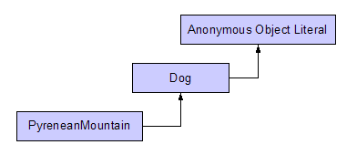

本著作係採用創用 CC 「姓名標示 2.5 台灣版」授權條款釋出。
Home
本著作係採用創用 CC 「姓名標示 2.5 台灣版」授權條款釋出。
Home
有關Inheritance ECMA-262給我的感覺是JavaScript是一個重視物件能作哪些事而非重視這個物件的親屬關係。 Prototypal Inheritance和熟悉Java這類Classic Inheritance相當不同。在JavaScript則是透過function object的 prototype property來設定兩個物件的關係。以下面這個簡單的例子來看我把Dog的prototype設定一個object literal 如果這個參數沒有設定會設定Object。
var Dog = function( name ) {
this.name = name;
};
Dog.prototype = {
fly: function() {
alert( 'I am flying...' );
}
};
Dog.prototype.say = function() {
alert( 'Waoo~' );
};
var PyreneanMountain = function( name ) {
this.name = name;
};
PyreneanMountain.prototype = new Dog();
var doggie = new PyreneanMountain( 'Lucky' );
doggie.fly();

當透過Constructor Invocation Pattern呼叫PyreneanMountain function object產生的物件，然後呼叫fly() function 的時候，雖然情況是很虎濫的，可以看到一隻自以為會飛的大白熊犬。
在FireFox和Safari都有讓我們可以看到__proto__這個property。除了下面的寫法之外，也可以透過Firebug觀察物件的 __proto__ property的內容。
Run Example
var Oolong = function() {
};
Oolong.prototype = {
oxidation: 'Medium',
brewing: function() {
return 'Tea time~'
}
};
Oolong.prototype.maturing = function() {
return 'OOO....';
};
var DongDing = function() {
this.location = 'Taiwan';
};
DongDing.prototype = new Oolong();
var obj = new DongDing();
var prop;
if( obj.__proto__ ) {
for( prop in obj.__proto__ ) {
document.writeln( prop + ': ' + obj.__proto__[prop] + '');
}
} else {
alert( 'This Browser do not expose __proto__ property' );
}
接著在Oolong function object的prototype property加上brewing() function，觀察看看結果。可以看到obj 由prototype chain可以呼叫到的brewing() function是Oolong function object定義的brewing() function。
Run Example
Oolong.prototype.brewing = function() {
return 'Oolong Tea Time....';
};
在Firefox, Chrome, Safari, Opera既然都有暴露__proto__這個property，也就是說不需要透過prototypal inheritence可以寫出下列程式
window.onload = function() {
var book1 = {
title: 'High Performance JavaScript',
author: 'Nicholas'
};
var book2 = {
title: 'JavaScript: The Good Parts',
author: 'Douglas'
};
var doc = document;
var result1 = doc.getElementById( 'result1' );
var result2 = doc.getElementById( 'result2' );
// alert( 'toString' in book2 ); // all true
if( book1.__proto__ ) {
result1.innerHTML = 'TRUE'; // firefox , safari, chrome, Opera
result2.innerHTML = book1.__proto__.constructor;
book1.__proto__.sayTitle = function() {
alert( this.title );
};
book2.sayTitle();
} else {
result1.innerHTML = 'FALSE'; // IE
}
};
因為book1, book2這兩個物件都共用Object這個protoype的物件，也就是說當我們針對book1的__proto__這個property存放的物件變動property的時候，book2一樣可以使用變更後的property。
也就是說像上面的範例第39行的book2可以成功invoke sayTitle()。如果要通吃這裡當然就只能用規格書規定而且大家都有實作的方法寫。
window.onload = function() {
var Book = function( obj ) {
var prop;
for(prop in obj) {
this[ prop ] = obj[ prop ];
}
};
Book.prototype.sayTitle = function() {
alert(this.title);
};
var book1 = new Book({
title: 'High Performance JavaScript',
author: 'Nicholas'
});
var book2 = new Book({
title: 'JavaScript: The Good Parts',
author: 'Douglas'
});
var doc = document,
result1 = doc.getElementById( 'result1' ),
result2 = doc.getElementById( 'result2' ),
result3 = doc.getElementById( 'result3' );
// alert( 'toString' in book2 ); // all true
if( book1.__proto__ ) {
result1.innerHTML = 'TRUE'; // firefox , safari, chrome, Opera
result2.innerHTML = book1.__proto__.constructor;
result3.innerHTML = book1.__proto__.__proto__.constructor;
} else {
result1.innerHTML = 'FALSE'; // IE
}
book2.sayTitle();
};